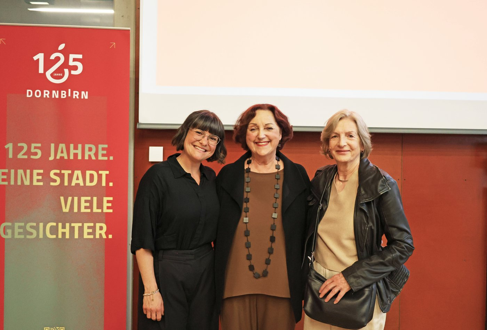

↩ Folge-Beitrag zu: Frauenspuren Dornbirn – Sichtbarkeit, Vielfalt und ein neuer Blick auf eine Stadt

Seit Dienstag Abend sind die Frauenspuren auf i.appear: ein digitaler Stadtrundgang, der neun Frauen aus Dornbirns Geschichte an die Orte zurückbringt, an denen sie gelebt, gearbeitet, geforscht und gewirkt haben. Wer reinhören will, kann sofort starten: Frauenspuren auf i.appear.
Worum es geht
Frauen kommen in der Vorarlberger Stadtgeschichte oft gar nicht oder bestenfalls als Randnotiz vor. Genau das ändert sich gerade. Grundlage des Rundgangs ist das Buch Frauenspuren der Historikerin Roswitha Fessler, erschienen als 54. Band der Dornbirner Schriften – eine ganze Ausgabe der Reihe, die zum ersten Mal komplett der Frauengeschichte gewidmet ist. Recherchiert sind die Biografien aus dem 19. und der ersten Hälfte des 20. Jahrhunderts: Erfinderinnen, Unternehmerinnen, Ärztinnen, Händlerinnen – Frauen, die Dornbirn mit aufgebaut haben und trotzdem aus dem kollektiven Stadtgedächtnis verschwunden sind.
Das, was im Buch auf Papier steht, holen wir mit dem Rundgang in den Stadtraum zurück: zur Hauseingangstür, zum Marktplatzwinkel, zum Geschäft, das es heute nicht mehr gibt. Hörbar, lesbar, sichtbar – an genau dem Ort, wo es passiert ist.
Die Präsentation
Bei der Eröffnung im Stadtarchiv durfte ich das i.appear-Netzwerk vorstellen und die wunderschönen Illustrationen von Lisa Althaus zeigen, mit denen wir die Frauen und ihre Räume sichtbar gemacht haben. Roswitha Fessler hat von ihrer Recherche erzählt – und die Geschichten, die für den Rundgang eingesprochen wurden, kommen alle aus ihrer Stimme.
Danach sind wir gemeinsam in die Innenstadt aufgebrochen, zu den ersten Stationen.
Drei Stationen, drei Frauen
Die Erfinderin im Lugerhaus. Eine Frau, die einen Kochherd entwickelt hat – in einer Zeit, in der Erfinderinnen schlichtweg nicht vorgesehen waren. Wer am Lugerhaus vorbeikommt, läuft normalerweise an einem Stadtpalais vorbei. Mit den Frauenspuren wird daraus die Werkstatt einer Tüftlerin.
Die Ärztin im Roten Haus. Mathilde Bösch-Berger studierte 1924 Medizin und wurde damit die erste Ärztin Vorarlbergs. Während des NS-Regimes floh sie in die USA. Als sie nach 1945 von der Not in der Heimat erfuhr, organisierte sie von dort aus eine grosse Hilfsaktion. Ihr Leben hat zwei Kontinente, drei politische Systeme und einen ungebrochenen Willen, sich um andere zu kümmern. Das Rote Haus am Marktplatz war ihr Zuhause.
„Uf om Blatz“. Die Station über Konstantina Tamanini, Tochter einer Trentiner Einwanderer:innenfamilie, die jahrzehntelang Delikatessen und Südfrüchte am Marktplatz verkaufte. Italienische Zitronen am Bodensee, lange bevor der Begriff mediterran in Vorarlberg ein Lifestylewort wurde. Konstantina war Marktplatz, Migrationsgeschichte und Genusskultur in einer Person.
Passend dazu hat uns Melanie vom Buongustaio mit Prosecco und Brötchen verwöhnt. Konstantina hätte wohl ihre Freude gehabt, dass das Dolce Vita in ihrer Ecke Dornbirns weiterlebt.
Danke
- An Roswitha Fessler für die phantastische Recherche, das wunderbare Storytelling und ihre Stimme, die den Rundgang trägt.
- An Lisa Althaus für die aussergewöhnlichen Illustrationen, die jeder Station einen eigenen visuellen Charakter geben.
- An Werner Matt und das Team des Stadtarchivs Dornbirn für die Unterstützung, die Organisation und den wunderbar gestalteten Abend.
Und an alle, die Dienstag dabei waren, mit uns durch die Innenstadt gezogen sind und zugehört haben. Genau dafür machen wir das.
Die Frauenspuren sind ab sofort kostenlos auf i.appear verfügbar – einfach reinhören, mitlaufen, entdecken.